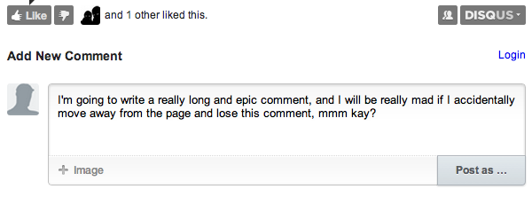

Client-side Storage
teaching-materials.org/storage
Today I'm going to talk about client-side storage - the ability for a website to store data persistently for users, entirely in the browser, using JavaScript.
Prehistoric HTML
- cookies
- Flash Storage
- Internet Explorer UserData
- Google Gears
- Dojo Storage
- window.name
Back then, websites stored the vast majority of their data on the server, and if they did store anything on the client-side, it was in a cookie.
What were cookies used for?
- Shopping carts
- User login
- Personalization
- Ad tracking
- Analytics
Read more Cookie Uses
Originally websites had no way of storing state across website visits, but the engineers at Netscape were working on a e-commerce solution, and they needed a way to track the content of shopping cart baskets, so they invented web cookies. Websites used cookies for tracking user session and personalization generally, as well as ad tracking and analytics. Google was and still is a huge user, obviously.
Where cookies fail(ed)
- Security
- User trust
- Performance
- Size
There were an increasing number of issues with cookies though, especially as web developers tried to use them for more and more uses. There were security issues - cookies are unencrypted unless your whole site is delivered over SSL, thus insecure. Cookies could also be stolen via DNS spoofing and cross-scripting techniques. Unfortunately (or fortunately) users found out about the security and privacy issues with cookies, and users started to disable or restrict cookies, so websites couldn't always assume they could use them. There were also performance issues with cookies - since they're included in every HTTP request, they can slow down the delivery of your webpage, and you wouldn't want to store large amounts of data in them. And you couldn't store huge amounts of data anyway - most browsers restricted each cookie to 4KB and allowed around 20 per domain, which isn't a whole lot. Websites wanted a way to persistently store data in the client, and cookies weren't giving them what they needed. Some clever developers came up with hacks, like using window.name or Flash storage, but since they were hacks, they still weren't what they needed.
HTML5 to the rescue!

- Web Storage APIs (localStorage/sessionStorage)
- IndexedDB
- File System APIs
- Application Cache
- ...cookies
Well, luckily, we are now in the era of HTML5, the new set of HTML, CSS, and JS specifications that tries to make the web better, and these specifications include multiple approaches to client-side storage: localStorage, IndexedDB, and the File system API. Let's see what these look like.
localStorage
- Key / value pairs - hash table
- Persistent on page reloads
- Avoids HTTP overhead of cookies
- Great for storing user preferences
localStorage
Read more: W3 WebStorage Spec
localStorage is a simple key/value store for storing string values, and persisting that data in the browser. There's also a related API called sessionStorage, for just storing data in a session, but today we're focusing on persistent data storage. Both have the same easy to use API for setting and getting items, and they also includes events for being notified when stuff is added and removed.
sessionStorage
Same as localStorage but...
- Lasts as long as browser is open
- Opening page in new window or tab starts new session
- Great for sensitive data (e.g. banking sessions)
Read more: W3 WebStorage Spec
localStorage: API
| method/attribute | args | returns |
|---|---|---|
| setItem | String key, String value | |
| getItem | String key | String value |
| removeItem | String key | |
| clear | ||
| key | int index | String key |
| length | int length |
Read more: localStorage spec
Its a very simple API - basically an associative array with wrappers to get and retrieve the keys, a way to iterate through all the keys stored, and exceptions when something goes wrong like going over quota.
localStorage: Security
Who can see data on http://store.company.com/dir/page.html?
| http://store.company.com/dir2/other.html | Yes |
| http://store.company.com/dir/inner/another.html | Yes |
| https://store.company.com/secure.html | No (Different protocol) |
| http://store.company.com:81/dir/etc.html | No (Different port) |
| http://news.company.com/dir/other.html | No (Different host) |
Read more: Same origin policy for JS
localStorage is subject to the same origin policy, a policy that most web developers are familiar with from using XMLHttpRequest. That policy dictates which websites can see which data, and its based on the subdomains and port of the URL. Security-wise, it means you need to be careful when using localStorage to not use it on a shared domain (like geocities!), and to be aware of security exploits like DNS spoofing. You also need to realize your data won't be shared across subdomains unless you do a bit of magic with document.domain.
localStorage: Why use a library?
- Support check
- Serialization
- Fallbacks
- Specific use cases (Forms, expiration, etc)
- Browser quirks
Read more: HTML5 Polyfills
Well, so, you can see that localStorage is a pretty simple API and you can just use the raw API out of the box, if you roll like that. But there are a few good reasons to use a library, and there are a good number of libraries out there. Most libraries will start with a check to see if the browser actually supports the API, and if it's currently enabled, and some libraries will then fallback to other techniques like cookies if it doesn't see support for it. Most will also handle serialization of objects using JSON.parse and JSON.stringify, and some libraries are designed for explicit use cases which we'll see later. And of course, there are always little browser quirks to JavaScript, and the libraries often include workarounds for those quirks. Let's look at a few example libraries.
localStorage library: store.js
Includes serialization and fallbacks (globalStorage/userData).
store.js is your standard localStorage library, and it includes fallbacks to globalStorage for older FireFox versions and userData for older IE versions - two browser-specific solutions that never made it into standards.
localStorage library: lscache
Includes support check, serialization and expiration.
This is my favorite library, because it's the one that I wrote - lscache. lscache adds the concept of expiration to localStorage, so that you can kick items out after a particular amount of time. If you are familiar with memcache on the server-side, it mimics that API, because I love memcache, and wanted to be able to do the same thing on the client-side. I'll talk more about why you might want expiration later.
How to *not* use localStorage
Don't slow down your site.

- localStorage access is synchronous
- JSON.parse/JSON.stringify takes CPU time
- Don't serialize unnecessarily
- Don't use excessive keys
- Don't do excessive gets/sets
- Don't block the UI
Just like localStorage can make your site faster, misusing it can make it slower. This is the main way that using localStorage can make your site worse.
How do you know what's slowing down your site?
Time your site in target browsers and find the slow points.

☞ Blog post: Measuring performance in PhoneGap, Blog post: Performance Profiling in JavaScript, JS Performance Analysis Tools
Don't serialize unnecessarily
Do use strings where possible
Before:
function store(key, val) {
localStorage.setItem(key, JSON.stringify(val));
}
store('num', 1);
store('on', true);
store('name', 'pamela');
After:
function store(key, val) {
localStorage.setItem(key, val);
}
store('num', '1');
store('on', 'true');
store('name', 'pamela');
How much faster?
jsperf: Primitives vs. Strings
jsperf: Optional use of JSON stringify
Don't use excessive keys
Do combine keys commonly accessed together
Before:
localStorage.setItem('first', 'pamela');
localStorage.setItem('middle', 'susan');
localStorage.setItem('last', 'fox');
After:
localStorage.setItem('name', 'pamela susan fox');
How much faster?
jsperf: 1 long key vs. multiple short keys
Balance need for serialization vs time it takes to access.
Don't do excessive gets/sets
Do cache data in local memory or the DOM, and only get/set on window load/unload.
Before:
$('input[type="checkbox"]').click(function() {
localStorage.setItem($(this).attr('name'), $(this).is(':checked'));
});
After:
window.onunload = function() {
$('input[type="checkbox"]').each(function() {
localStorage.setItem($(this).attr('name'), $(this).is(':checked'));
});
};
Examples:
Exercise Explorer: Caching in local memory,
Hearty Extension: Caching in the DOM
Don't block the UI
Do defer using localStorage until onload
Before:
<head>
<script>
$('#name').html(localStorage.getItem('name'));
</script>
</head>
After:
<html>
<body></body>
<script>
window.onload = function() {
$('#name').html(localStorage.getItem('name'));
};
</script>
</html>
☞ Not Blocking the UI in Tight JS Loops
Many libraries actually do a localStorage get/set when loaded, watch out for that- like Modernizr. Defer!
Don't block the UI
Do use setTimeout to defer localStorage access

Before:
$('button').click(function() {
var name = localStorage.getItem('name');
$('#name').html(name);
});
After:
$('button').click(function() {
window.setTimeout(function() {
var name = localStorage.getItem('name');
$('#name').html(name);
}, 10);
});
Don't block the UI
Do throttle or debounce to avoid repetitive gets/sets
Before:
$('textarea').keydown(function() {
localStorage.setItem('text', $(this).text());
});
After:
$('textarea').keydown(function() {
$.debounce(250, function() {
localStorage.setItem('text', $(this).text());
});
});
Blog Post: 2 LocalStorage Tips, jQuery Throttle/Debounce Plugin
WORSE: A dysfunctional site.
- Don't assume localStorage works or will always work.
- Don't use key names that collide.
Don't assume localStorage works or will always work.
Do check for feature support, writeable, quota.
Bad:
localStorage.setItem('bla', 'bla');
Better:
if (window.localStorage) {
localStorage.setItem('bla', 'bla');
}
Best:
if (window.localStorage) {
try {
localStorage.setItem('bla', 'bla');
} catch(e) {
if (e.name === 'QUOTA_EXCEEDED_ERR' || e.name === 'NS_ERROR_DOM_QUOTA_REACHED') {
} else {
}
}
}
Most localStorage libraries take care of this for you.
// incognito mode
Don't use key names that collide.
Do use highly descriptive keys with pseudo namespaces.
Before:
localStorage.setItem('name', 'pamela');
After:
localStorage.setItem('conference-speaker-first-name', 'pamela');
After:
lscache.setBucket('conference-speaker');
lscache.set('first-name', 'pamela');
No excuses: jsperf: Long vs. short names
IndexedDB
IndexedDB
window.indexedDB
- Object based data store
- In-order retrieval by index or key
- Asynchronous or synchronous API
IndexedDB
Read more: Indexed DB spec, MDN: Using IndexedDB
As you can see from how much longer this code is, the IndexedDB API is a bit more complex - but it's also more capable. It's an API for storing large amounts of structured data, and doing queries on that data using indexed. It's a database, but a non-relational database- so no SQL queries. Everything you do happens in a transaction, and all the requests to set or fetch data are asynchronous.
IndexedDB: open database
IndexedDB: create stores
IndexedDB: create stores
IndexedDB: querying data
IndexedDB: fetching all data
IndexedDB: Why use a library?
- Not the simplest API.
- Many fundamental differences across browser versions.
- Not supported in all browsers, fallbacks needed.
Storage library: Lawnchair
Includes serialization, fallbacks (window.name, userData, gears, indexedDB)
Optional plugins for aggregation, pagination, and queries.
Another popular wrapper library is LawnChair, which is similar but uses asynchronous functions for setting and getting, so that it can be used with asynchronous APIs - so it actually has adapters to work with indexedDB, plus the older techniques.
Other IndexedDB Libraries
- IndexedDB Polyfill: Falls back to WebSQL.
- persistence.js: Falls back to localStorage, memory, mySQL on Node, AppEngine
- YDN-DB: Falls back to localStorage, webSQL.
File APIs
(Many) File APIs
- Reading and manipulating:
File / Blob, FileList, FileReader
http://dev.w3.org/2006/webapi/FileAPI/ - Creating and writing:
BlobBuilder, FileWriter, FileSaver
http://dev.w3.org/2009/dap/file-system/file-writer.html - Directories and System:
FileSystem
http://dev.w3.org/2009/dap/file-system/pub/FileSystem/
FileList and FileReader APIs Demo
FileWriter APIs: Demo
Read more: HTML5 Rocks: Exploring the file system API.
The File API is a way for websites to store files on the user's file system, scoped to their own little sandbox. Some developers might prefer the idea of storing files to the idea of using a database, but more importantly, you can use the File API to easily store binary files, like images or PDFs.
Let's compare!
Which to use?
- What kind of data can you store?
- How much data can you store?
- How can you query data?
- How well does it perform?
- What browsers does it work in?
Read more: Client-side Storage Comparison
So HTML5 gives you a few options, and that's because they each differ a bit and have their own pros and cons. Let's go through the questions I think you should be asking yourself when you're deciding which one to use.
What kind of data can you store?
| cookies | String |
| localStorage | Strings |
| IndexedDB | Most JS Objects |
| File API | Text, Binary |
First, what kind of data do you need to store? Cookies and localStorage technically accept only strings, but of course, we know in programming that you can serialize many pieces of data in strings, so if it's not binary, you can probably store it. IndexedDB can natively store most JavaScript objects (with a few exceptions like functions), and the File API can store both text and binary objects.
How much data can you store?
| cookies | 4KB each, 20 per domain min | |
| localStorage | 2.5-5MB average | |
| IndexedDB | Temporary: up to 20% of available space per app. Permanent: Can request up to 100% of available space. | |
| File API | ||
Read more: WebStore support test, Chrome Quota Management API
How much you can store of those types of data matters. Cookies can only store up to 4Kb each, and the spec tells browsers to support a minimum of 20 per domain and 300 total. localStorage quota varies, which some browsers supporting 2MB total per domain, and others seemingly unlimited. The average is 5MB. The indexedDB and File API specs don't yet give recommendations for quota, so currently Chrome is experimenting with a unified quota API for them. With that quota system, there are 2 types of storage - temporary and permanent. Anything in temporary storage can be evicted by the browser whenever it feels like, while data in permanent storage will only be removed at the user or app's request. An app can use up to 20% of total available temporary storage space, but to use permanent storage, they must explicitly request the user, and then they can request whatever the user has available. With all of these, you can never safely assume that you can store everything. It's the user's computer, not your server, so it's ultimately up to them to decide what to do with their hard drive space.
What kind of queries can you do?
| cookies | Key |
document.cookie |
| localStorage | Key |
localStorage.getItem('fish');
|
| IndexedDB | Indexes |
var index = store.index("name");
index.openCursor(IDBKeyRange.bound("A", "B")
|
| File API | Filename |
fs.root.getFile('image.png',
{}, function(fileEntry) {});
|
Read more: IndexedDB: Using an Index
Once the data is stored, how do you get it back out? What kind of queries can you do? With cookies, localStorage, and the File API, you just query by name and get back the value - basic. With IndexedDB, you can create indexes on properties and cursors with key ranges, and get back the matching objects.
How well does it perform?
| cookies | Bigger HTTP requests, Read/writes to disk |
| localStorage | Blocking read/writes, Serialization, Read/writes to disk |
| IndexedDB | Async read/writes, Read/writes to disk |
| File API | Async read/writes, Read/writes to disk |
Read more: LocalStorage read performance, localStorage performance
For all of these, in order for the data to persist, the browser must write the data to disk, and read it from disk- and anytime you do that, you're subject to how long it takes to read/write something from the hard drive. Besides that, there are other performance characteristics for each technique. Cookies are added to HTTP requests, so they affect the actual size of HTTP requests over the wire and the subsequent loading time for a page. localStorage is a synchronous API, so when your code sets or retrieves an item, it blocks the rest of the code from executing until the operation is done. Plus, if you're serializing objects into strings, it takes time to do that. The indexedDB and file APIs are both asynchronous APIs, so your code may be a bit more complex, but your website will perform better because the read/write operations aren't blocking. The more data you're storing and fetching, and the more complex that data is, the more performance matters.
What browsers does it work in?
| IE | FF | Chrome | Safari | Opera | iOS | Android | |
|---|---|---|---|---|---|---|---|
| cookies | |||||||
| localStorage | 8.0+ | 3.5+ | 4.0+ | 4.0+ | 10.5+ | 3.2+ | 2.1+ |
| IndexedDB | 10+ | 4+ | 11.0+ | ||||
| File API | 13.0 |
caniuse.com: Web Storage, IndexedDB, FileSystem, Mozilla on File Systems API
Lastly but most importantly! The HTML5 persistant storage options vary widely in their browser support, largely because there has been a lot of disagreement over what the client-side storage APIs should look like, and since localStorage was simplest and least controversial, it was implemented first. The browser engines all seem to be fairly happy with indexed DB and the file API now, so we should start to see browser support pick up for them over the next year, but at the current time, it’s pretty limited.
Which to use?
| cookies | Good fallback. |
| localStorage | Practical current option. WIN! |
| IndexedDB | Good future option. |
| File API | Chrome-only! |
For this talk, I will focus on ways to use localStorage - but when those other options become better supported cross-platform, you should very well be able to pick the best one for the job. Let's look a bit more at localStorage now.
Use Cases
What can we do with client-side storage?
- Remember user data
- Retain application state
- Remember form input
- Improve performance
- Help the app work offline
We can use localStorage for some of the things we used to use cookies for, but we can also use it for a wider range of use cases to improve the user experience of our website, which is hopefully what we're all trying to do.
Remember user data
- For apps that don't have a server-side (yet/ever)
- For apps that don't want to force user login for interactivity
- For apps that live only in the client (extensions/mobile)
One way we can use it is to remember user data. Sure, you can remember user data on the server and often should, but there are a few times when you might want to save it on the client instead - like if you want to let users have a customized experience on your site without having to sign up, or if you're doing a purely client app like a browser extension or mobile app.
Remember user data: Europopped
Saves favorites.
| europopped-84858380 | -1 |
| europopped-99070608 | 0 |
| europopped-100548743 | 1 |
One of my favorite blobs is Europopped, and it catalogs the amazing music and music videos that come out of Europe. I actually really love Europop (in case you didn't catch on yet), so I wanted a way to easily listen to the songs on the blog. I also love maps, so I mashed up the blog posts with a Google map to view them by country. Then when I view a video and like it, I can click the little like button and remember. It's all stored client-side in localStorage. This mashup is completely client-side, and only a few lines of code, and it's just nice that I can add in favorites without needing a server and database. Maybe if anyone else liked europop as much as me, I'd have to add a server.
Remember user data: dillinger.io
Saves user profile.
| profile | {"theme":"ace/theme/textmate","showPaper":false, "currentMd":"lscache\nThis is a simple library that emulates `memcache` functions using HTML5 `localStorage`,… |
dillinger.io is a Markdown editor that uses localStorage to remember the preferences and last typed text, and let you interact without ever signing in. They do have a sign-in with github option, and ideally they'd migrate from localStorage to the server-side once you signed in with that, so that your preferences would follow you.
Remember user data: Quiz Cards
Saves what cards the user has seen and how well they've done.
| german-answer-mode | multiple-choice |
| german-silverware-Besteck | {"lastAsked":1322691448489, "timesAsked":1, "timesCorrect":1, "timesIncorrect":0} |
| german-ham-Schinken | {"lastAsked":1322691462282, "timesAsked":1, "timesCorrect":1, "timesIncorrect":0} |
| german-bucket1 | [{"id":"arm-Arm","lastAsked":0}, {"id":"cheek-Backe","lastAsked":0}, {"id":"belly-Bauch","lastAsked":0},… |
I really like learning languages so I made this Chrome extension for doing interactive flash cards. When you install the extension, you get a little icon in your toolbar that you can click to practice interactive flash cards. It uses the Leitner system of learning, so you see cards less the better you do at them - and that's the data I store in localStorage.
Retain application state
The more "app-like" your website is like, the more app state you should persist.
- Open tabs
- Expanded/collapsed sections
- Layout options
- Dismissed messages
- etc.
Even if you do have a server to store user preferences and data, there are still some pieces of data that can be better served by client-side storage, like the current state of the application. A user doesn't necessarily expect application state to follow them across clients, and it's sometimes overkill to store that in the server. (And you can always migrate it to the server later if you want).
Retain app state: EatDifferent
Remembers which stream the user was viewing, what messages were dismissed.
| lscache-promo-supplies-jan30 | hidden |
| lscache-stream-filter-users | everyone |
This is the app that I'm actually building now - EatDifferent - a nutrition tracking tool. The home screen has streams of different sets of users that you can click between, and I default it to the last viewed stream by remembering that in localStorage. I also use localStorage to remember what messages you've dismissed in the UI.
Retain app state: jshint.com
Remembers checked options.
| opts | {"debug":true, "forin":true, "eqnull":false, "noarg":true, "noempty":false, "eqeqeq":true, "boss":false, "loopfunc":true, "evil":true, "laxbreak":true, "bitwise":true, "strict":true, "undef":true, "curly":true, "nonew":true, "browser":true, "devel":false, "jquery":false, "es5":false, "node":false} |
JSHint is a tool which checks your JS code quality and includes many options, since JavaScript style varies. On the online version, you can check the options and it remembers that for the next time you visit.
Remember form input
- Login username/email
- Unsaved drafts
- Stuff that's often the same
- autoStorage
- Savify
Specialized libraries:
You can also remember user entered form input - like their login username, information in forms that they fill out often, and long text input that they perhaps meant to save but didn't for whatever reason. It's a great use of localStorage because the form input doesn't *need* to be remembered, but it can bring a lot of joy to the user if it is - like magic. You just have to consider carefully which parts of a form should actually be remembered, and for how long.
Remember form input: jsperf.com
Remembers the author information.

| author-email | pamela.fox@gmail.com |
| author | Pamela Fox |
| author-url | http://pamelafox.org |
On jsperf.com, they have a form for creating new test cases. It remembers your author information, since that's always the same, and it also uses the same author information to auto-populate the comments creation form.
Remember form input: Disqus
Remembers unposted comment drafts.
| disqus.drafts | [{"thread:delayed_image_loading_on_long_pages": "I'm going to write a really long and epic comment, and I will be really mad if I accidentally move away from the page and lose this comment, mmm kay?"}] |
Disqus is a popular embedded commenting system, and they added a feature to remember the text that you typed in a comment box but didn't post, so that if you accidentally leave a page and come back, your comment draft will still be there. The new Twitter does this, and they also save an expiration so they don't show the draft after a certain point.
Improve performance
- Cache API results
- Cache AJAX results
- Cache resources
- lscache, lscache jQuery plugin
- YQL LocalCache
- Inject
Specialized libraries:
Websites are increasingly reliant on AJAX requests and API requests, and many times these requests can be cached so users dont have to wait so long. Yes, you can set cache headers on the server so that the browser serves them out of its cache, but there are sometimes when it's better to use localStorage. You have more control when you do the caching yourself in the client- you can invalidate the resources yourself, and you can cache requests for different amounts of time in different areas of your site. Plus, mobile browsers have smaller caches and can do less HTTP requests, so you can improve your performance significantly there by using localStorage for caching resources. You can also improve the *apparent* loading speed for a page, by loading in old data first from localStorage, then refreshing with new data.
Improve performance: RageTube
Caches parsed playlists, Youtube API search results.
| youtube: Hot Chip I Feel Better | [{"id":"5GOZjlwIwfk","uploaded":"2010-03-17T17:53:17.000Z","category":"Music","title":"Hot Chip - I Feel Better",… |
| youtube: Hot Chip I Feel Better-expiration | 22153109 |
| parser: http://www.a… | {"songs":[{"artist":"Angus & Julia Stone","title":"Big Jet Plane","id":"angusandamp; julia stone-big jet plane"},… |
Here's another music video mashup of mine, which I made when I was in Australia and couldn't use Pandora or Spotify or any good streaming music service. RageTube turns online playlists from an Australian TV channel into Youtube videos, and it uses two APIs - one to parse the playlists, and the other to parse the Youtube API search results. I use lscache to parse both these API results - the playlist indefinitely, and the API search results for a few days, because video searches don't change that often. So if a user often loads in the same playlist, RageTube will make much less requests to the APIs.
Improve performance: World Info
Caches YQL API results.

| thewholefrigginworld | {"query": {"count":247, "created":"2012-02-12T14:32:56Z", "lang":"en-US", "results": {"place":[{"name":"Afghanistan", "centroid": {"latitude":"33.930450", "longitude":"67.678940", … |
Read more: LocalStorage & How to Use it
Here's a mashup by Christian Heilmann that shows information about the world. He uses the YQL API to fetch the country info, and then he stores that all in one key - "thewholefrigginworld". He also wrote a YQL-localStorage library.
Improve performance: Mobile Facebook
Caches autocomplete data.
| typeahead | {"time": 1329151694363, "value": {"friends": [{"path": "/anton.kovalyov", "photo": "http://profile.ak.fbcdn.net/hprofile-ak-snc4/186412_506803098_992151709_q.jpg", "text": "Anton Kovalyov", "uid": 506803098,},… |
Facebook mobile uses localStorage to make friend searches and autocompletes faster, by fetching your friends and caching. It's a great example of where it's okay if the data is slightly stale. Twitter does something similar.
Improve performance: Google Mobile
Caches JS and CSS files.
| mres.-8Y5Dw_nSfQztyYx | <style>a{color: #11c} a:visited{color: #551a8b} body{margin:0;pad… |
| mres.-Kx7q38gfNkQMtpx | <script> //<![CDATA[ var Zn={},bo=function(a,b){b&&Zn[b]||(ne… |
| mres:time.-8Y5Dw_nSfQztyYx | 1301368541872 |
| mres:time.-Kx7q38gfNkQMtpx | 1301368542755 |
var c=localStorage.getItem("mres."+a);
if (c) {
document.write(c);
localStorage.setItem("mres:time."+a,Date.now());
} else {
window._clearCookie("MRES");
document.location.reload(!0);
}
Read more: Bing & Google Case Study
Both Google Mobile and Bing mobile search use localStorage to cache their HTML, CSS, and JS, to ultimately make their search page download smaller. It's a little complicated, but basically they assign IDs to parts of their webpage, store them in localStorage, remember the IDS and expirations in a cookie, and when the server sees that cookie, it doesn't re-send those stored parts.
Improve performance: ESRI Maps
Caches map tile images.
| http://server…/tile/12/1409/2075 | /9j/4AAQSkZJRgABAQEAYABgAAD/2wB… |
| http://server…/tile/12/1410/2077 | /9j/4AAQSkZJRgABAQEAYABgAAD/2wB… |
Read more: Storing tiles in localStorage
You can actually use localStorage to cache images, by converting them from binary data into data URIs. If you use a massive number of images on your site, you might want to do this. Here's an example from the ESRI maps API of caching the map tile images - each key is the tile URL, and the value is the data URI.
Make app work offline
- Cache API results
- Cache AJAX results
- Cache resources
- jQuery offline
Specialized libraries:
Do everything that you did to increase performance, but do it so that the app can go offline. But think about the user experience. It might make sense to have stale data for a few minutes on the web, but what about for a few hours on mobile? Or a whole day? And here you have to cache all the necessary data for the app to work, not just the data that will make the app more performant.
Make app work offline: EatDifferent
Caches user profile and log data.
| lscache-user | {"first_name":"Testy", "last_name":"McTesterFace", "id", 166, … |
| lscache-166:log02/14/2012 | {"measurements":{"weight":{"units":"","value":"150"}, "meals":[{"what":"sausage","when":"12:00pm",… |
For the mobile app for EatDifferent, I use localStorage so that it works when the user is offline. It remembers the information about the last logged in user, as well as previously loaded daily logs. Once it gets a connection to the network, it tries to re-fetch both the user and log data, and then refreshes the UI with the new data.
In conclusion
Know your options
| Size | Data | Perf | |
| cookies | 20 * 4KB | Strings | Slow load |
| localStorage | 2-5MB | Strings | Slow access |
| IndexedDB | ∞? | Objects | Async access |
| File API | ∞? | Text,Binary | Async access |
☞Understanding Client-side Storage in WebApps
...And your browsers
| IE | FF | Chrome | Safari | Opera | iOS | Android | |
|---|---|---|---|---|---|---|---|
| cookies | |||||||
| localStorage | 8.0+ | 3.5+ | 4.0+ | 4.0+ | 10.5+ | 3.2+ | 2.1+ |
| IndexedDB | 10 | FF4+ | 11.0+ | ||||
| File API | 13.0 |
Check back soon...!
Here's my very technical diagram of the state of client-side storage. We inched along with cookies and hacks for a long time, but now we've got localStorage in modern browsers and we're close to having IndexedDB and File API in them soon. So you can start taking advantage of client-side storage to improve your apps, and look forward to a future where you will be able to pick the best tool for the job. Tusen Tack!